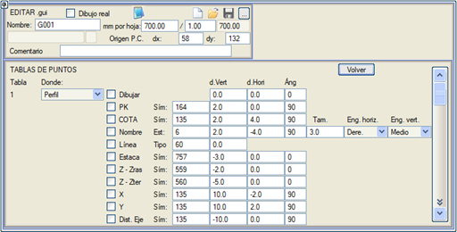

| |
|
BOYKESİT PAFTALARI İÇİN ŞABLONLAR: NOKTA TABLOLARI
|
Metin tablolarına benzer şekilde, buradan [Nokta Tabloları]'nda tanımlanan verilerin gösterilmesi sağlanabilir. 
Veriler, boykesit alanında (bu durumda, arazinin profili referans alınarak) veya bilgi bandı (gitar) alanında gösterilebilir. Dolayısıyla, dikey öteleme sırasıyla araziye veya karşılaştırma düzlemine göre olacaktır. Çiz kutucuğu etkinleştirildiğinde, noktalar sarı bir daire veya kare ile (profilde veya bilgi bandında çizilip çizilmediklerine bağlı olarak) temsil edilir. KM ve kot, belirtilen etiket tipleriyle ve ad, belirli bir etiket stili, boyutu ve metnin yerleştirme noktasının (yatay ve dikey bağlantılar) göreli konumuyla temsil edilebilir. Ayrıca, noktadan karşılaştırma düzlemine tanımlı bir mesafeye kadar çizilecek olan, belirtilen tipte bir çizgi veya dikey bir iz de eklenebilir. Kazık no değerini (diğerleri arasında Brezilya tarzı boykesitlerde tipik bir değer) etiketleyebiliriz. Bir .top/.toc dosyasından elde edilen orijinal X ve Y koordinatlarını etiketlemek mümkündür. Her nokta ile tanımlanan eksene olan mesafe etiketlenebilir. Tüm durumlarda, ayrıca bir yatay öteleme ve bir açı belirtmek de mümkündür. |